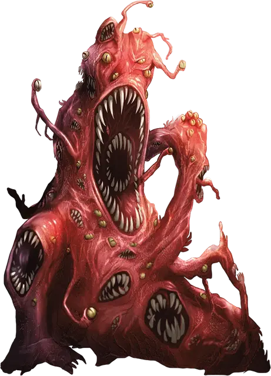

Бормочущий ротовик
Gibbering Mouther
Средняя Аберрация, нейтральная

Класс Доспеха 9
Хиты 67 (9к8 + 27)
Скорость 10 футов, плавая 10 футов
| мод | спас | ||
|---|---|---|---|
| СИЛ | 10 | +0 | +0 |
| ЛОВ | 8 | −1 | −1 |
| ТЕЛ | 16 | +3 | +3 |
| мод | спас | ||
|---|---|---|---|
| ИНТ | 3 | −4 | −4 |
| МДР | 10 | +0 | +0 |
| ХАР | 6 | −2 | −2 |
Иммунитет к состояниям сбивание с ног
Чувства тёмное зрение 60 футов, пассивное Восприятие 10
Опасность 2 (450 опыта)
Бонус мастерства +2
Среда обитания Подземье
Особенности
Искаженная земля. Пол в радиусе 10 футов вокруг ротовика является воскообразной труднопроходимой местностью. Все существа, начинающие ход в этой области, должны преуспеть в спасброске Силы Сл 10, иначе их скорость уменьшается до 0 до начала их следующего хода.
Бормотание. Ротовик постоянно неразборчиво бормочет, пока видит другое существо, и сам дееспособен. Все существа, начинающие ход в пределах 20 футов от ротовика, и слышащие бормотание, должны преуспеть в спасброске Мудрости Сл 10. При провале существо не может совершать реакции до начала своего следующего хода и бросает к8, чтобы определить, что оно будет делать в текущем ходу. При результате от «1» до «4» существо ничего не делает. При результате «5» или «6» существо не совершает ни действий, ни бонусных действий, и все свое перемещение тратит на то, чтобы перемещаться в случайным образом выбранном направлении. При результате «7» или «8» существо совершает рукопашную атаку по случайным образом выбранному существу в пределах досягаемости, или не делает ничего, если не может совершить такой атаки.
Действия
Мультиатака. Бормочущий ротовик совершает одну атаку укусом и, если может, использует Ослепляющий плевок.
Укусы. Рукопашная атака оружием: +2 к попаданию, досягаемость 5 футов, одно существо. Попадание: Колющий урон 17 (5к6). Если размер цели не больше Среднего, она должна преуспеть в спасброске Силы Сл 10, иначе будет сбита с ног. Если цель убита этим уроном, ротовик поглощает её.
Ослепляющий плевок (перезарядка 5–6). Ротовик выплевывает шар слизи в точку, которую он видит в пределах 15 футов от себя. Шар при столкновении взрывается ослепительной вспышкой. Все существа в пределах 5 футов от вспышки должны преуспеть в спасброске Ловкости Сл 13, иначе станут ослепленными до конца следующего хода ротовика.
Описание
Из всех ужасов, созданных отвратительным колдовством, бормочущие ротовики — одни из самых ужасных и порочных порождений. Это существо состоит из глаз, ртов и сжиженных тел его прежних жертв. Впавшие в безумие из-за разрушения их тел и поглощения ротовиком, эти жертвы бессвязно бормочут, пожирая все, до чего смогут добраться.
Бесформенное тело. Тело бормочущего ротовика представляет собой аморфную массу из ртов и глаз, передвигающуюся, цепляясь за поверхность несколькими ртами, и подтаскивая остальное тело. И хотя они медленно передвигаются, они легко могут плавать в воде, грязи и зыбучих песках.
Безумное бормотание. Когда бормочущий ротовик чует добычу, его рты начинают бормотать и шептать на разные голоса: басовитыми и высокими, плачущими и воющими, орущими в агонии и экстазе одновременно. Эта какофония голосов заполняет собой все, что может услышать существо, и большинство бежит от неё в ужасе. Остальные же, подавленные страхом и безумием, стоят парализованными, глядя, как ужасающее существо подползает все ближе, чтобы поглотить их.
Всепоглощающие. Ведомый жаждой поглощать всех, до кого он доберется, бормочущий ротовик подползает к парализованным его безумными голосами жертвам и хор на время замолкает, пока пасти обгладывают и поглощают плоть. Это чудовище разжижает камень, к которому прикасается, затрудняя бегство существ, которым удалось справиться с воздействием его бормотания.
Бормочущий ротовик не оставляет от своих жертв даже следа. Однако когда останки тела жертвы будут поглощены, её глаза и рот всплывают на поверхность чудовища, готовые присоединиться к хору мучительного бормотания, который услышит следующая жертва твари.